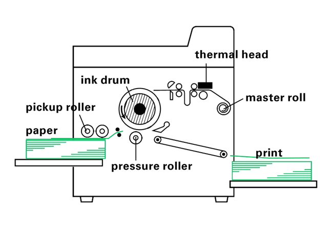

Risograph Printing is a style of emulsion oil and water printing that originated in post-war Japan. It is a high-volume printing method that first began being commonly utilized by Churches, Small businesses and organizations, that then gained traction with Artists.
To begin working a Risograph machine, you first have to upload or scan an image. The Riso machine analyzes this image and makes a paper stencil called a ‘Master.’ The Master of a Riso machine essentially functions as a replicable template of which it then uses to print out all layers in a singular ink color.
To understand Risograph machines, you also have to understand the process of additive color processing. When using a Risograph machine, one sheet of paper goes through the printer multiple times because of how it layers and understanding colors. Riso machines work by transforming a singular layer of an image into greyscale and then passing it through and applying varying levels of inking pressure to a page. For example — you may first begin a Print by making a stencil of the extracted ‘Blue’ layer that is rendered as a greyscale Master. Once you print your X number of sheets with just blue, you would then change your ink color, and re-pass it through the machines.
Paper, when pressed through a machine, is passed through (usually) one ink drum with the stencil wrapped tightly around it. When the paper passes under the drum, it prints the color layer onto it. In order to add additional colors to the print, you would change the ink color, and push the same pages through the printer in order to create a vibrant artwork.
